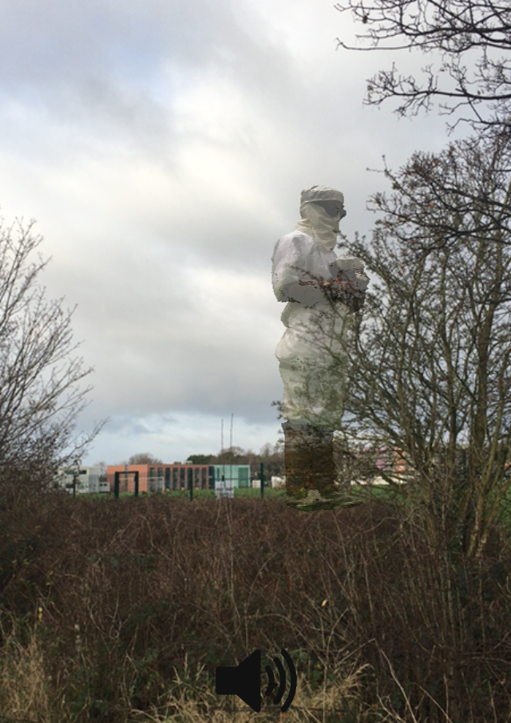
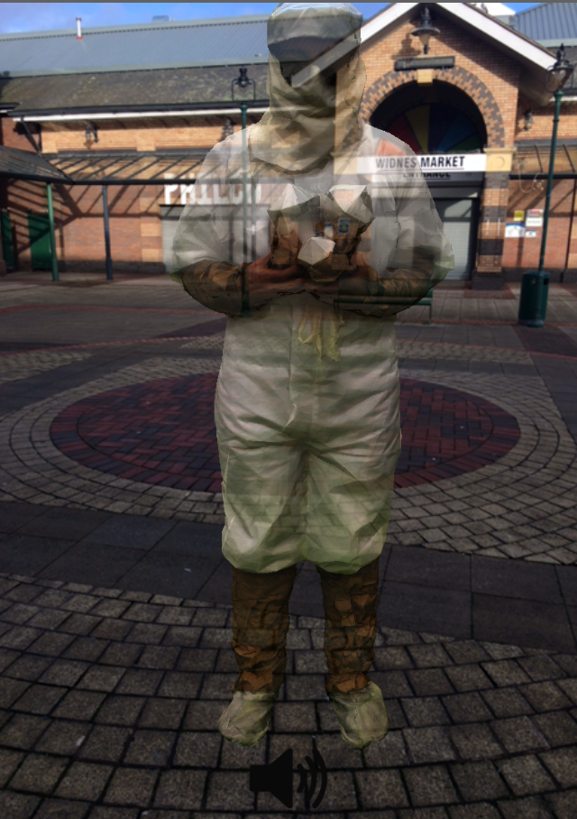
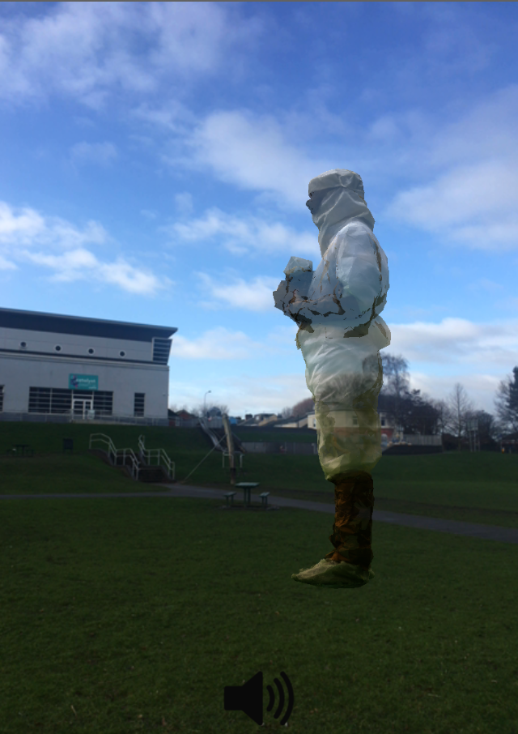
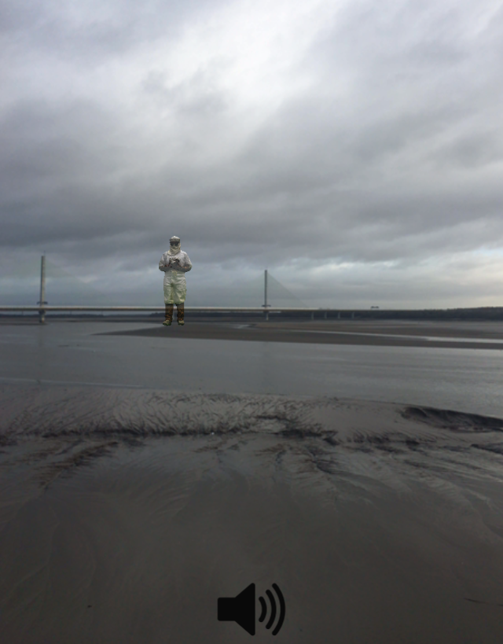
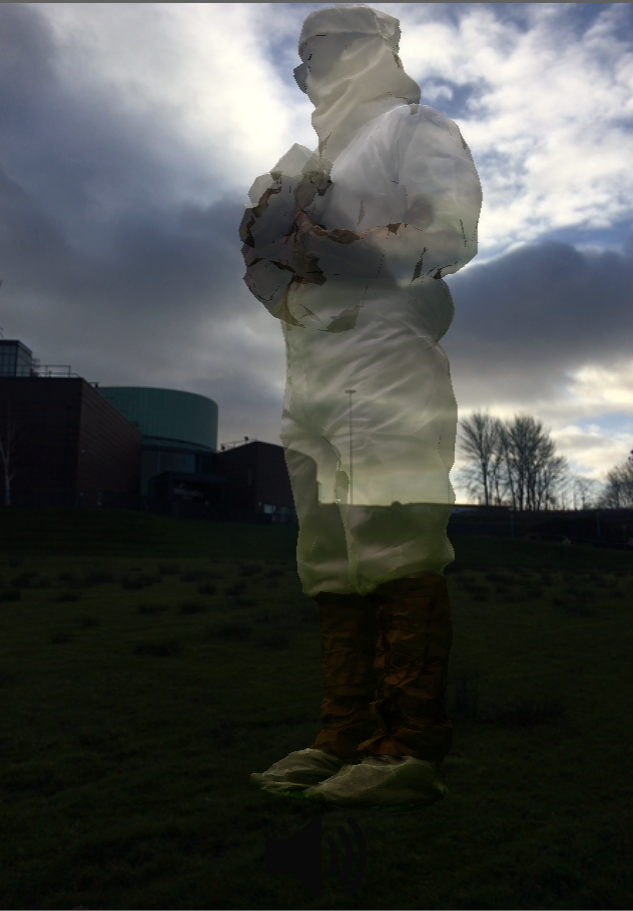
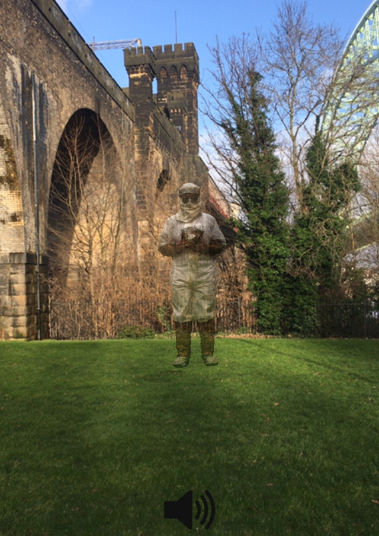
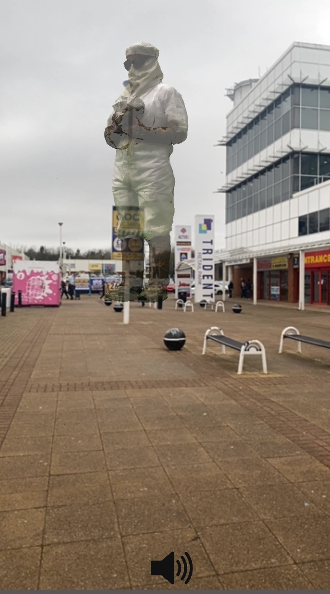

Help
Welcome to the Bleach Packers AR experience. Use the map to help you find each location in the real world. When you’re at the location shown by the map-pin, press it to view the augmented reality character there.
About AR
AR is Augmented Reality. We superimpose images over the top of your phone’s camera picture to make it look as though they are placed in the real world.
How to use it
The AR experience is an ordinary web-page. You can view it by tapping on the link provided by the map pin. Then, hold your phone up so you can see the world through the screen and then move around until you can see our AR object, an apparition from the past.
Your Phone
Your phone is amazing: it will download the AR experience from the internet, and then provide readings from its compass, orientation and location sensors so the scene is drawn in the right place, to provide the illusion of walking around an object.
Because the AR experience is downloaded from the internet, your phone should ask you for permission to let it access all of these capabilities. Expect it to pop up a few questions before you’re able to continue.
Our website supports later versions of Android and iOS and has been tested on iPhone 6s and Google Pixel 3a. Newer phones have more advanced navigation features and can pinpoint their position very accurately. On older phones, you may see the AR wobble. This is because the phone is getting lower accuracy postion readings which may jump around a little.
Scroll no further if you don’t like spoilers!
AR Checkup
If you’d like to check that all is well with your phone and that you can display AR, we have an example for you.
If you’re reading this on your computer:
-
tap here to view the AR on your screen.
-
point your phone’s camera at this QR code, to see the AR on your phone’s screen. You’ll need to orientate yourself so you are facing West.
If you’re reading this on your mobile phone:
- tap here to view the AR. You’ll need to orientate yourself, so you’re facing West.
Pictures
Here are some pictures of the trip we took, checking our AR was in the right place!

… at Cronton Sixth Form College playing fields…

… at the entrance to the Widnes Markets…

… in front of Catalyst, on Spike Island…

… out in the Mersey, 200m tall…

… in front of the Brindley Theatre…

… beside the Jubilee Bridge…

… and right next to the cinema (and waffles!).